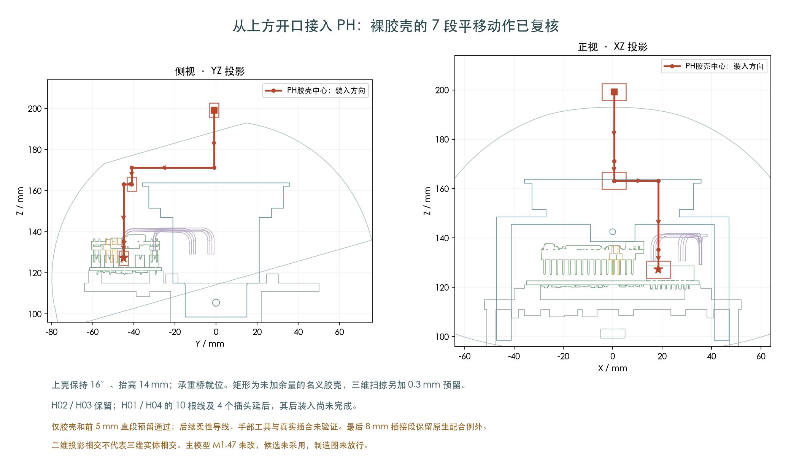
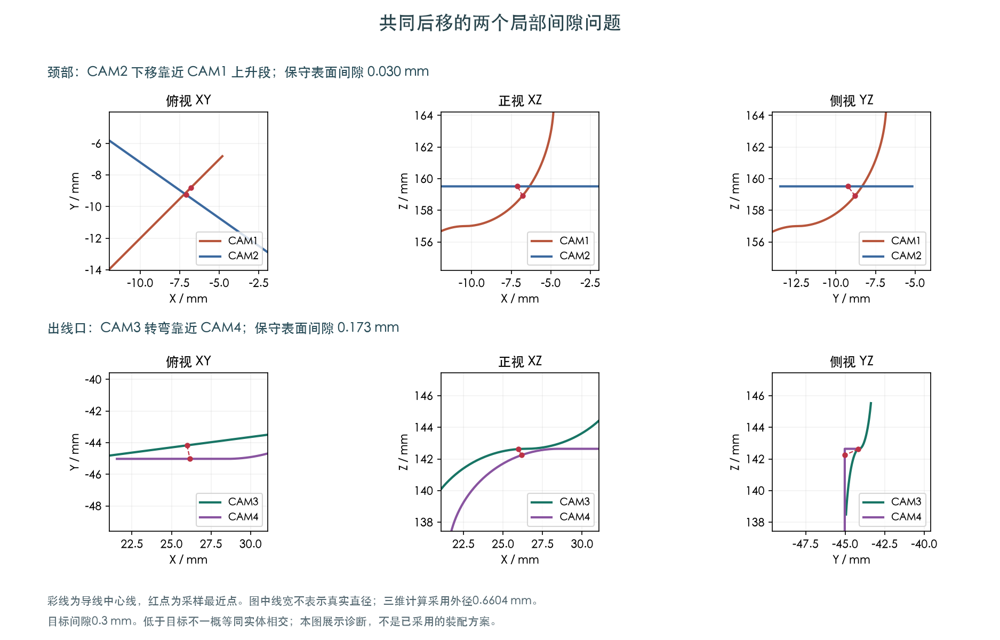

找到裸PH插头从上方开口接入的7段路径，封闭实体扫掠复核通过；两处原线间问题也已定位。四根导线随插头移动仍待检查，主模型M1.47未改，裁线图未放行。
裸PH胶壳的封闭实体扫掠复核通过，外形未缩小，仍加0.3mm预留。采用H02/H03先装、H01/H04延后的顺序；四根线最前5mm直段有24段扫掠通过，余下柔性导线随胶壳移动尚未检查。


两处原采样的保守表面间隙分别约0.030和0.173mm，未达到本研究0.3mm预留。下界不等于实际最小间隙，未达到目标也不一概等于实体相交。
| 方案 | 本次结果及边界 | 证据 |
|---|---|---|
| 分两次升高，经上方开口接入PH | 裸胶壳7段平移的封闭实体扫掠复核通过；保留0.3mm预留，初始8mm插合段有已记录的原生配合例外。四根线前5mm直段另有24段扫掠通过；余下柔性导线尚未验证。 | 记录 |
| CAM2局部绕开CAM1 | 检查171种配置、展开18个可达状态，所选控制范围内未连到目标。 | 记录 |
| 提前调整导线高度 | 12个单线候选的抬升通过；36种四线组合中6种通过抬升，但继续后移都未通过。 | 记录 |
| 临时扭开自由线尾 | 3°、3.5°局部对桥间隙通过，但四线合并仍未通过；4°时对桥的表面间隙上界约0.266mm，已低于0.3mm目标。 | 记录 |
| 关闭上壳时插PH | 同一插头和障碍物下，延长至600秒，展开2286状态，仍未找到完整路径。 | 记录 |
| 保持上壳打开后插PH | 搜索展开2413个状态后仍未找到完整路径；保留5556个待搜索状态，不代表不存在路径。 | 记录 |
| H01/H04延后，再插PH | 展开2023状态后未找到完整路径；H01/H04明确延后，不能据此省略后装验证。 | 记录 |
导线外径0.6604mm、目标预留0.3mm保持。局部扭开3.5°并不代表整段动作或四根线一起通过；4°的间隙不足另外用距离上界确认。
上壳保持16°、抬高14mm，桥在安装位置，目标是机身右侧外部空间。固定身体线、后板插头和上壳实体保留；这次没有要求PH胶壳穿颈孔。
搜索展开2413个状态后仍未找到完整路径；保留5556个待搜索状态，不代表不存在路径。 这里只检查裸胶壳的既有包络，四根CAM线随插头的移动、真实插合、手部和工具仍未验证。
完整带线装配顺序、H01/H04、其他跨关节线和FFC、扎带与工具仍是待完成的设计。受限搜索失败不能证明所有方式都不可行。
供应商按图制作已确定；最终线长和制作图需要装配路线收敛后再确定。